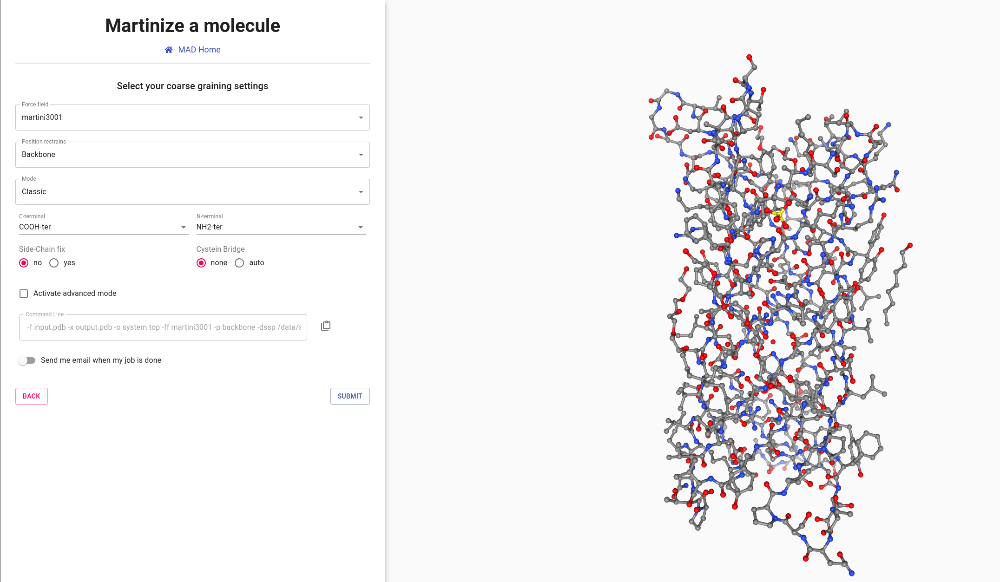
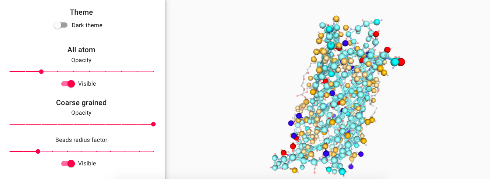
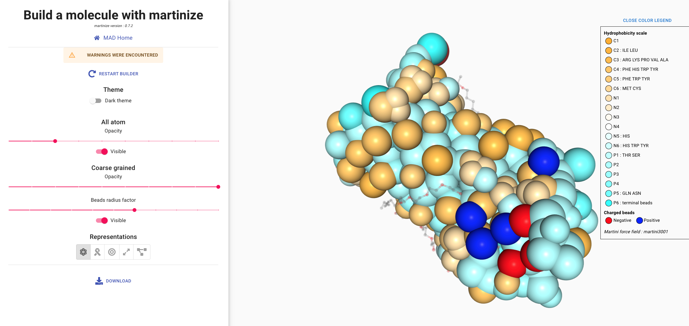
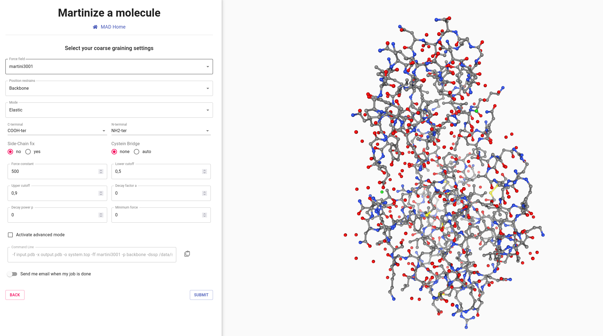
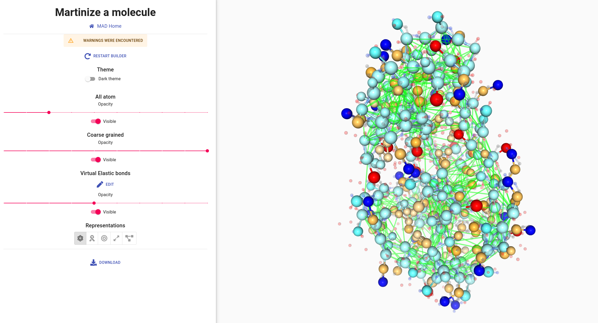
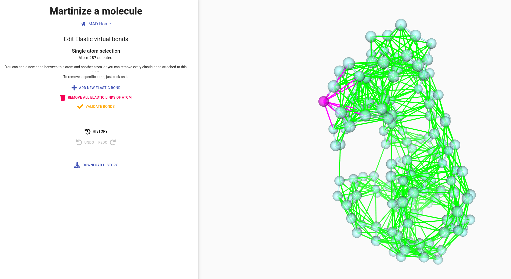
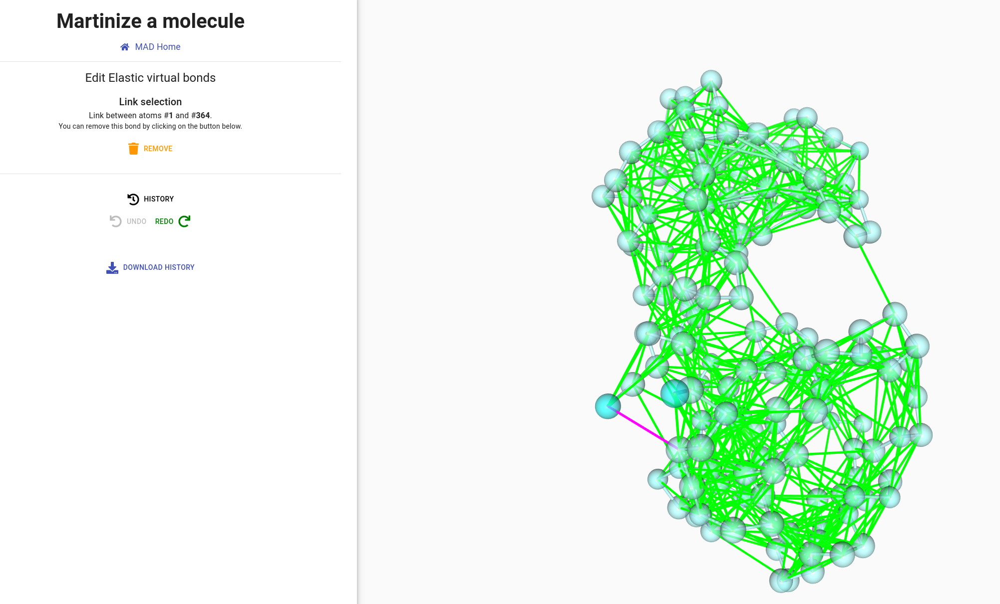
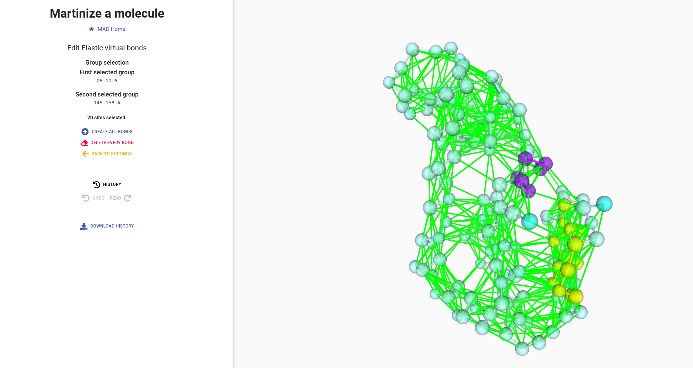

Upon authentication to the MAD website,
the
Molecule Builder option
should toggle to black, marking it as accessible.
Click on it to access to the
MAD:Molecule Builder welcome page.
Here you will be invited to upload a coordinate file.
launch
The
MAD:Molecule Builder requires a single PDB file as input.
We will use as example, the Neisserial surface protein A (NspA) from the bacterium Neisseria
meningitidis, which forms a transmembrane beta barrel.
It is a single chain membrane protein.
Its atomistic structure can be downloaded from the PDB web
site
under the code 1P4T.

Once loaded, the all atom structure is displayed and the interface displays
several options to configure the coarse-graining process of the structure.
-
Force field: choose the version of MARTINI that you plan to use during your
molecular dynamics simulation.
-
Position restraints: generally useful during the equilibration simulation of
the molecule, in order to
maintain the structure of the backbone.
-
Mode: Search for molecule within the selected biochemical category
-
termini and fixes: patches molecular beads to improve representations of
functional groups charges and geometries.
-
Cystein bridges: detect and apply covalent bonds between cysteine side-chains
based on distances.
-
Email: In case of a long running computation, email can be sent upon
completion. The email will enclose a link to access and visualize your data.
Your data are privately stored on the server for a period of 15 days.
launch
Set the force field parameter to the 3.0.0.1 version of Martini.
We will use the classic mode, alternative modes will be explored later on.
All remaining options will be left in default state: neutral termini, no side-chain fix, and no cysteine
bridge.
Then proceed to the submission of the protein.
The MAD:Molecule Builder should take a few seconds to generate a MARTINI model of
NspA.

Feel free to explore the several representation options provided to visualize the newly coarse-grained protein.
-
Change the beads radius by a factor
-
Select other representations such as surface.
-
Modify all atoms and coarse grain representation opacities.
-
Set Bead radius scaled according to Martini 3 definitions.
info_outline
Martini 3 force field has 3 bead sizes which are mainly defined by the number
of non-hydrogen atoms represented by the bead:
regular (R) size for 4 atoms mapped by 1 bead (or 4-1),
small (S) size for 3-1 and tiny size(T) for 2-1 mappings.
The unscaled radius of the R, S and T beads in Martini 3 corresponds to 0.264, 0.230 and 0.191 nm, respectively.
Color scale goes from cyan to white to orange to show hydrophobicity of beads.
Cyan beads have low hydrophobicity value and orange beads have high hydrophobicity value.

info_outline
The Martini3 model features 3 main chemical classes of neutral beads: C for apolar/ hydrophobic,
N for intermediate and P for polar/hydrophilic.
Each class has 6 beads with a number as suffix. This number represents the degree of hydrophobicity of
the bead: ranging from 1 (more hydrophobic) to 6 (less hydrophobic).
The color scale represents the hydrophobicity. As a rule of thumb, C beads will be represented by
orange hues, N by white and P by cyan.
info_outline
There are 2 classes of charged beads in MARTINI 3: Q beads for monovalent +1/-1 charged
molecules and D beads for divalent charged molecules.
While Q beads also have five degrees of hydrophobicity,
the color code for charged beads in MAD will only account for the sign of the charge.
Positively charged beads are blue and negatively charged beads are red.
Protein with elastic network
The elastic network approach consist of a set of harmonic potentials added on top of
the Martini model to conserve the tertiary structure of proteins.
The network is fully dependent of the pdb structure used as reference, with
the number of bonds defined by the upper and lower distance cutoff.
The rigidity of the protein model is defined by the number of elastic bonds and by the force constant used.
Optimal parameters for the elastic network depend of the protein system in study.
It is recommended to use experimental or atomistic simulations data to calibrate the parameters of your
elastic network.
To illustrate the interests of the elastic network tool in
MAD:Molecule Builder
we will use the T4 Lysozyme protein from the bacteriophage T4.
launch
Download the corresponding
PDB structure.
Then, go back to the
MAD:Molecule Builder welcome screen and load this file.
For T4 Lysozyme in MARTINI 3, after setting Force field to "martini3001" and Mode to
"Elastic", we recommend the following parameters:
-
A force constant of 700 kJ/(mol.nm2)
-
Lower and upper cutoff of 0.5 and 0.9 nm respectively
-
Use neutral termini, side-chain fix, and auto assignment of cysteine bridges
-
Activate the side chain fix

info_outline
Additional improvements of the protein stability and reliability of its structures and dynamics are achieved
by applying the side chain fix option, which adds dihedral angles between SC1-BB-BB-SC1 beads, leading to an
improvement of the overall side chain orientations.
launch
The protein is ready to be coarse grained. Click on the SUBMIT and wait for the processing to finish.
You should have access to a viewer of the coarse grained protein
with its elastic network represented by green links between beads.
The MAD:Molecule Builder provides two edition modes of the elastic network.
-
Manual edition: click on a single bead to remove all its elastic bonds, or add a new bond by
clicking on another bead. A direct click on a bond allows to delete it.
-
Group selection: select a group of beads and linking them all together, or select two groups to
add elastic bonds between each other beads.
All modifications done to the elastic network in your current session are logged in the
History section.

info_outline
The group selection tool implements a simple query language. For example, selecting “05-10:A” as group 1 and
“145-158:A” as group 2, will toggle links between the two groups.
launch
Click on the EDIT button to experiment with the edition modes as
depicted in the pictures around
Single atom click
Direct bond click
Group links edition



info_outline
Once your modifications are done, the MAD:Molecule Builder will ask for a
confirmation before writing them to your history. Should you accept, the previous elastic model will be
erased.
Nothing prevents you from relaunching a Molecule Builder with the same file if you want to have different
network states for the same molecule.